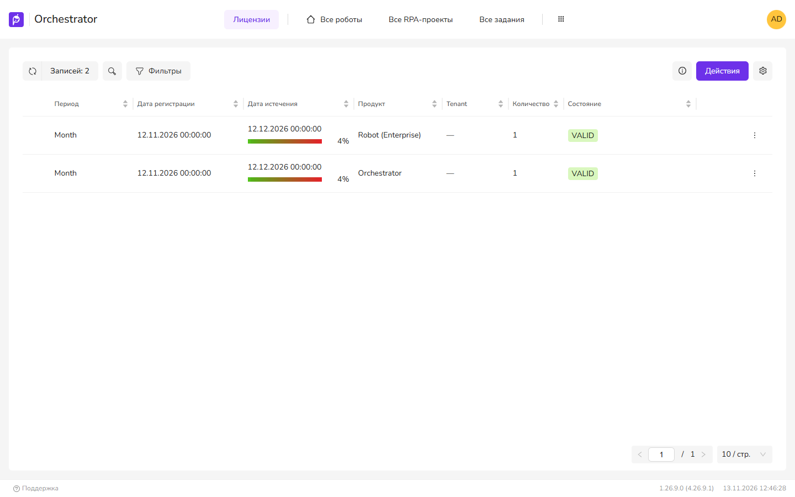

Нет валидной лицензии или робот не получает лицензию
На странице описаны две разные проблемы. Лицензия Оркестратора привязана к оборудованию сервера (в Docker — к ключу primo-machine-key из compose-файла) и проверяется каждые 15 секунд. Лицензии роботов выдаются роботу на время запуска. Сначала определите, какая из них возникла.
Симптомы
- UI4 и API отвечают «Отсутствует валидная лицензия на оркестратор.» (HTTP 402). В журнале WebApi — «Метод API недоступен - отсутствует валидная лицензия на оркестратор.»
- Лицензия стала недействительной после замены процессора, переноса ВМ или обновления Оркестратора.
- Робот не запускается или завершается с ошибкой «Отсутствуют свободные лицензии.» (HTTP 409).
Лицензия Оркестратора
Вероятные причины
- Изменился отпечаток оборудования. Сравниваются три значения: идентификатор процессора, серийный номер диска и имя (на Windows — учётная запись службы MachineInfo, на Linux — имя хоста).
- В Docker изменён ключ
primo-machine-keyили соль шифрованияPRIMOSALTв compose-файле. В журнале WebApi при этом «CpuID не совпадают». Верните прежние значения и пересоздайте службы командойsudo docker compose up -d— лицензии снова станут действительными. - Служба MachineInfo недоступна или часы на её сервере и сервере WebApi расходятся.
- Истёк срок лицензии.
- Обновление на версию, которую бессрочная лицензия уже не покрывает.
- Системное время на сервере переведено назад.
Что проверить
- Откройте Лицензии. Проверьте Состояние, Дата истечения. Есть лицензия Оркестратора в состоянии VALID
- В журнале WebApi найдите причину: «CpuID не совпадают: …», «HddID не совпадают…», «UserName не совпадают…», «Подписи не совпадают», «Ошибка при проверке лицензии LicenseID=…». Установлено, какое значение не совпало
- Если задан
License:MachineInfoUrlилиLicense:MachineInfoUrls, проверьте, что MachineInfo отвечает с сервера WebApi и часы на обоих серверах совпадают. Ошибки: «Таймаут … при обращении к MachineInfo…», «Сервис параметров оборудования для лицензий скомпрометирован». Таких строк нет - Если в журнале «Проверка системного времени скомпрометирована или системное время переведено назад.», все лицензии считаются недействительными. Исправьте время на сервере.

Как исправить
Если изменилось оборудование, сформируйте Запрос на замену лицензии и отправьте его поставщику. После загрузки новой лицензии нажмите Активировать.
Если источник отпечатка — MachineInfo (License:MachineInfoUrl), запрос проходит за License:Timeout (по умолчанию 4 с). Для нескольких узлов WebApi адреса MachineInfo перечисляются в License:MachineInfoUrls, порядок важен. Лицензия действительна, если совпал хотя бы один узел. Запрос на лицензию не создаётся, если недоступен любой узел: «Не все узлы кластера доступны. Создание запроса на лицензию не возможно.»
Бессрочная лицензия Оркестратора в первый год с даты начала действует для любой версии. Позже — только для версий, выпущенных в течение года с даты начала. Дата версии вычисляется по номеру: 1.26.9 → 1 сентября 2026. Поэтому лицензия может стать недействительной сразу после обновления. Перед обновлением сверьте лицензию, см. Перед обновлением: лицензия и бэкап.
Робот не получает лицензию
| Ответ или запись | Что значит |
|---|---|
| 409 «Отсутствуют свободные лицензии.» | Все лицензии роботов заняты |
| 409 «Превышена квота на лицензии.» | Исчерпана квота пользователя робота |
| 402 «Уже запущено максимальное количество роботов в рамках лицензии …» | Число одновременно работающих роботов достигло лимита лицензии |
| 500, в журнале «Не удалось проверить наличие свободных лицензий Робота.» | Внутренняя ошибка, проверьте исключение в соседних записях журнала |
- Проверьте, не заняты ли лицензии роботами, которые уже не работают. Лицензия освобождается при остановке робота или если он не присылает keepalive дольше
RobotStart:IntervalForReleaseInSeconds(в классе 300 с, в Dockerfile 120 с). Число занятых лицензий совпадает с числом работающих роботов - После добавления лицензии подождите: общее число лицензий кэшируется на
Cache:License:DurationInMinutes(5 мин). Новые лицензии учитываются, проекты уходят из очереди
Освобождение по таймауту отмечается событием «Лицензия робота освобождена по таймауту». Истечение срока отслеживает служба States: уведомление «Срок действия лицензии истекает» за LicenseExpired:DaysStartBefore (15) дней.